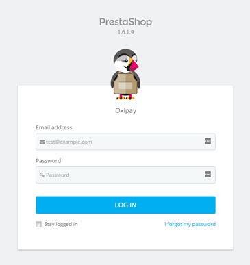
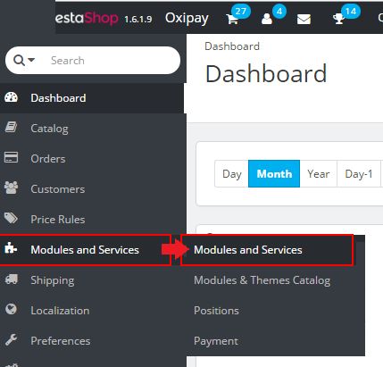
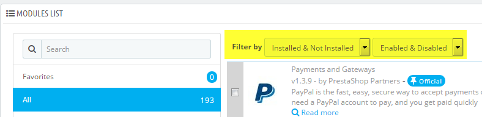
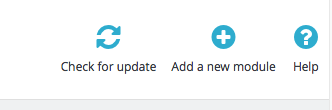

Setting up Oxipay on a PrestaShop Store
Introduction
This document outlines the steps needed to install Oxipay on your PrestaShop store. Oxipay enables customers to purchase items using their credit cards on an interest free payment plan.
Installing Oxipay
The Oxipay plugin can be installed automatically via PrestaShop's admin panel. The instructions underneath details the steps of how to upload the Oxipay plugin .zip file and then install it and configure the various parameters needed for it to work properly.
Automatic Installation
This section outlines how you can perform the automatic installation of the Oxipay plugin via PrestaShop's admin area.
1 - First, you will need to download a copy of the Oxipay plugin for PrestaShop. To download your copy, navigate to the following URL, click on the Clone or download link in the top right then click on Download ZIP from the menu that appears. This will download the plugin as a ZIP file into your default installation directory.
https://github.com/oxipay/oxipay-prestashop
2 - Log into your PrestaShop's admin area using an Email address and a Password combination that has already been configured as an admin.

3 - Once logged in, you will be presented with your store's dashboard. From the side menu that appears to the left, hover over Modules and Services and then click on Modules and Services from the sub-menu that appears.

4 - This wll take you to the Modules and Services page and wil display a list of modules that are available and can be installed/configured on your store.
5 - Scroll downwards and bring the Modules List panel into focus and ensure that both filtering drop-downs are configured as follow - i.e. they are set to display Installed & Not Installed plugins as well as those that are Enabled & Disabled.

6
4 - Scroll to the top of the page and then click on the Add a new module icon.

5 - Clicking on Add a new module will expand the Add a new module panel. Here you can upload the Oxipay plugin by first clicking on Chose a file where you can specify the folder that contains the Oxipay plugin .zip file. Then click on Upload this module to initiate the upload of the plugin.
This will display the Add Plugins page; click on the Upload Plugin button.

5 - This will display an area on the same page where you can chose the file you want to upload.

6 - Click Choose File then browse to the folder containing the Oxipay.zip file. Select it and click Open.
7 - Click on Install Now.

8 - This will start the installation process. Once completed, you’ll be presented with a page confirming that the installation was successful. Then click on the Activate Plugin link.

9 - Once the activation is complete, you will be re-directed to the Plugins page with a message indicating that the Plugin is activated.

10 - Plugins on the page are listed alphabetically, scroll to the bottom and confirm that the Oxipay plugin is installed and activated.

Manual Installation
1 - Navigate to the URL below and then download the latest Oxipay plugin .zip file.
2 - Unzip the file and then copy the un-zipped folder into your WordPress server at the following path: [wordpress-folder]/wp-content/plugins
Configuring Oxipay
1 - Log into the WordPress Admin page.
2 - Hover over Plugins on the left sidebar. From the submenu that appears, click on Installed Plugins.

3 – On the Plugins page, scroll to the bottom of the page and then click on the Settings link underneath WooCommerce.

4 – This will bring up the WooCommerce settings page. Click on the Checkout tab.

5 – At the top of the page, click on the Oxipay link. This will bring up the various settings that can be configured for Oxipay. Next is a description of the various settings that you will find on this page.

Oxipay Plugin Settings
Underneath is a description of the various Oxipay settings that you can configure. To bring up this page, follow the instructions listed in the Configuring the Plugin section.
| Enable | Ticking it enables Oxipay as a payment option, otherwise it is disabled. |

| Title | This controls the title of Oxipay that users see when selecting Oxipay as a payment option. Default value is provided which you can override. |

| Description | This controls the description of Oxipay that users see when selecting Oxipay as a payment option. Default value is provided which you can override. |

| Shop Name | The name of your business as advertised on the internet, TV or communicated to your customers via emails, brochures. |

| Oxipay Gateway URL | Provided to you by Oxipay. This is the URL that your site needs to communicate with to process payments using Oxipay. |

| Oxipay Sandbox Gateway URL | Provided to you by Oxipay as part of your testing of Oxipay during initial setup or to troubleshoot issues. This will process a test transaction on your store, but no dollar amounts will be deducted. |

| Merchant ID | This is the ID that uniquely identifies your business. This value will be provided to you by Oxipay. |

| API Key | An alpha-numeric sequence provided to you by Oxipay to verify that the payment request is from a current valid merchant. A new API key is generated and provided to you on a regular basis. |

| Test Mode | Enables Oxipay Test Mode, do this as part of your initial setup of the plugin to verify proper installation or to troubleshoot issues. Enable it will allow you to process a test transaction where no dollar amounts are deducts. |

Once you have finished updating the various Oxipay settings, click on the  button at the bottom of the page. This will then display a message at the top of the page indicating that the saving was successful.
button at the bottom of the page. This will then display a message at the top of the page indicating that the saving was successful.

Updates to Oxipay
Updates to Oxipay might be made in the future to either accommodate newer internet technologies that we deem essential to integrate into our Oxipay plugin or newer versions of WooCommerce or WordPress. Our recommendation is that the existing Oxipay plugin is first deactivated and then deleted.
Note
De-activating and Deleting Oxipay
1 – Log into WordPress Admin.
2 – Click on Plugins on the left sidebar; then click on Installed Plugins.
3 – Scroll to the bottom, bring Oxipay into focus and then click on the Deactive link associated with it.

4 – If successful, the message Plugin deactivated will be displayed at the top of the page.

5 – Scroll to the bottom of the page again. This time around, click on the Delete link underneath Oxipay.

6 – This will display a page asking you to confirm if you want to proceed with deleting the Oxipay Plugin. Click on Yes, delete these files.

7 – If successful, you will be re-directed back to the Plugins page with the message The selected plugin has been deleted. at the top.

8 – You can now installing the new version of the plugin using either the automatic or manual procedures outlined above.
Test 1